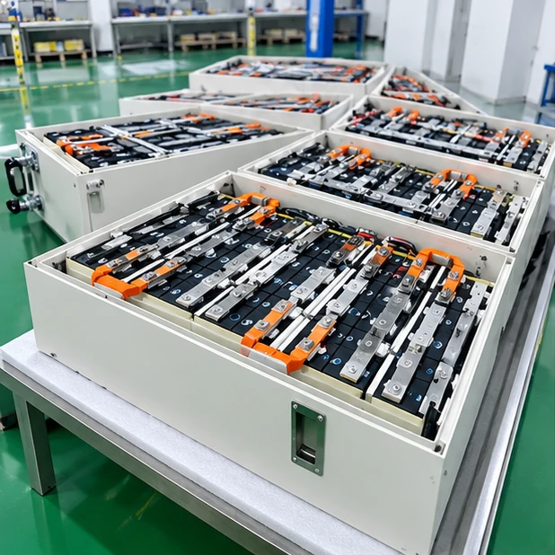
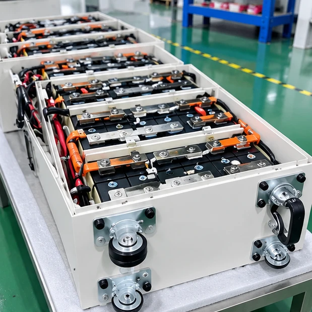
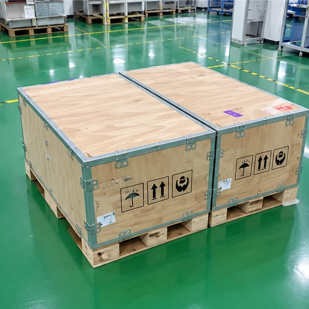

Clean energy for everyday life and lasting progress.
Selection starts with critical loads and backup duration.
Match the configuration to sunlight, site and use.
Anthrise Technology
Purpose with a practical path.
Cleaner energy should create value where life happens: in a home that needs dependable backup, a business planning its next step, or a community making better use of sunlight. Anthrise Technology works toward that future by connecting energy products with clearly defined needs.
From energy needs to informed choices.
Based in Shenzhen, we bring together battery storage, hybrid inverters, solar products, portable power and lighting for residential, commercial and off-grid applications. We support distributors, installers and project partners with a clear starting point for product selection and project discussions.
Our approach starts with the essentials: daily consumption, peak loads, backup duration and installation conditions. We then review model options, system compatibility and the documentation needed for the project. By keeping the conversation specific and the information clear, we help partners move from a broad requirement toward a configuration they can assess with confidence.
PACK processes & warehouse gallery
02 / PROCESS & GALLERYPACK assembly workflow
- Incoming checks · OCV / IR
- Capacity grading & matching
- Insulation & mechanical fixing
- Busbar / interconnection assembly
- BMS & sense wiring
- Pack electrical verification
- Charge / discharge verification
- Final inspection & protective packing
Typical process illustration; actual steps and test limits depend on the confirmed product design. Welded or bolted connections are design-specific. No fixed factory holding period is claimed.
PACK, protective packing and storage

Module connections · process illustration

Protective crate packing

Cell and carton storage

Stretch-wrapped cell trays

Cell preparation area

Foam-layer packing

Batch staging on pallets

PACK assembly overview

PACK enclosure detail

Protective crate packing
AI-generated process illustrations, not photographs of an actual Anthrise facility. Generic internal views do not establish the design of a specific SKU; system compatibility is subject to confirmation.
Discuss your project →